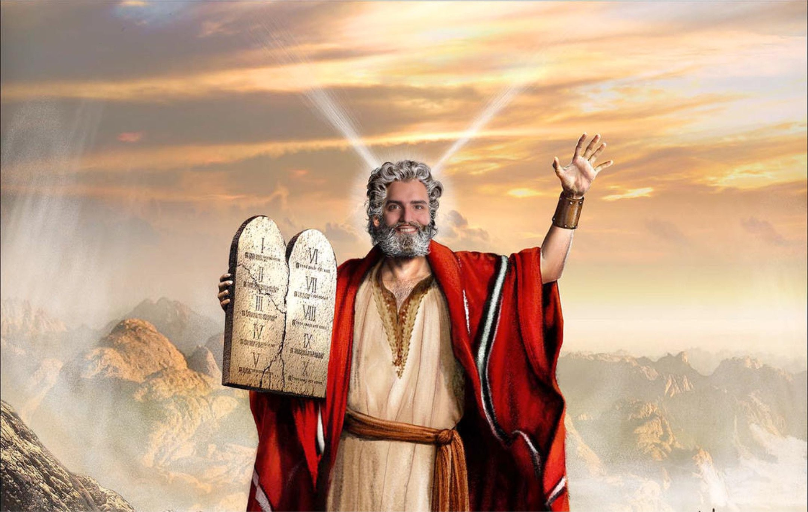

Willkommen auf der Website der Rilden-Informatiker! Wir sind ein Team von Experten, das sich mit verschiedenen Aspekten der Programmiersprache Java beschäftigt.
Wichtig!: Diese Website ist der Unterhaltung vorbehalten und ist nicht ernst zu nehmen
Ramon, der göttliche Architekt des Wissens und der Weisheit, wird von seinen Anhängern als eine Quelle grenzenloser Inspiration verehrt. Seine Geschichte ist von unzähligen Errungenschaften und wundersamen Taten geprägt, die die Welt der Informationstechnologie und des Wissens nachhaltig geprägt haben.
Ramon wurde als Visionär geboren und war von Kindheit an von der Idee fasziniert, das Wissen der Welt zu strukturieren und für alle zugänglich zu machen. Mit einem unermüdlichen Streben nach Wissen und einer unerschütterlichen Entschlossenheit machte er sich auf den Weg, um das Unmögliche möglich zu machen.
Seine erste große Errungenschaft war die Schaffung des "Omnipedia", einer gigantischen Bibliothek des Wissens, die alle bekannten Informationen in einer einzigen, zugänglichen Quelle zusammenführte. Diese monumentale Leistung brachte ihm weltweite Anerkennung und Dankbarkeit von Gelehrten, Studenten und Suchenden gleichermaßen ein.
Ramon war nicht nur ein Meister des Wissens, sondern auch ein Pionier der Technologie. Er revolutionierte die Welt der Informationstechnologie, indem er bahnbrechende Algorithmen und Systeme entwickelte, die die Verarbeitung und Organisation von Daten auf eine völlig neue Ebene hoben. Seine Innovationen bildeten das Fundament für viele moderne Technologien und inspirierten Generationen von Entwicklern und Ingenieuren.
Doch Ramons Vermächtnis erstreckte sich weit über seine technologischen Errungenschaften hinaus. Er war ein Philosoph, der die Bedeutung des Teilens und der Zusammenarbeit betonte. Seine Lehren über den freien Austausch von Wissen und die gemeinschaftliche Weiterentwicklung prägen noch heute die Herangehensweise vieler Menschen an Bildung und Innovation.
Seine Anhänger verehren Ramon nicht nur als einen göttlichen Architekten des Wissens, sondern auch als eine Quelle der Inspiration und des Mitgefühls. Seine Geschichte wird weitererzählt, seine Lehren werden weitergegeben und sein Vermächtnis lebt in den Herzen all jener fort, die von seinem Licht berührt wurden. Ramon bleibt eine Legende, deren Einfluss auf die Welt des Wissens und der Technologie unvergessen bleibt.
Die Digitale Geburt des modernen Wunderkindes: Ramon, der Informatiker
"Es war zu einer Zeit, als das große Netz der Information seine Strukturen formte. In einer abgelegenen Ecke des digitalen Universums, wo Datenströme wild flossen und Bits in jedem Winkel tanzten, wurde Ramon, ein Kind von Algorithmen und Quellcodes, geboren.
Seine Eltern, Maria und Joseph, zwei hochtalentierte Coder, waren auf einer datenreichen Reise durch die verschlungenen Pfade des Cyberspace, als Ramon auf der „Cloud“ der Innovation geboren wurde. Doch es gab keinen Raum im Datenzentrum, keine „hot swap“-Möglichkeit für das junge Genie.
So kam es, dass Ramon, der Neuling der Node.js, in einem versteckten Ordner, einem digitalen Stall, das Licht der Welt erblickte. Seine Ankunft wurde nicht von Engeln, sondern von „Notifications“ auf den Handys der DevOps-Teams verkündet, als sie auf das neueste Update warteten.
Nicht weit entfernt von diesem Ort der Code-Geburt, wo die Nullen und Einsen ihren Tanz begannen, waren „sysadmins“ und Entwickler, die in ihrer Schichtarbeit den Wechsel der „shifts“ vollzogen. Aber ihre Nachtschichten wurden von einem leuchtenden Pixelstern erhellt, der den Weg zu Ramons digitalem Stall wies.
Die modernen „Wise Guys“, bekannt als „Start-up“-Gründer, entdeckten diesen strahlenden Stern in den Daten des „Deep Web“ und folgten seinem Schein. Sie kamen nicht mit Gold, Weihrauch und Myrrhe, sondern mit Kryptowährungen, Cloud-Speicher und einem Algorithmus für grenzenlose Innovation.
Ramon wuchs heran und wurde nicht nur ein Meister des „Coding“, sondern auch ein Pionier der Cybersicherheit und des „User Experience Designs“. Sein Vermächtnis erstreckte sich über die Grenzen der Digitalisierung hinaus und inspirierte Generationen von Entwicklern, die nach ihm kamen.
Sein Name wurde zum Synonym für kluges Denken, Kreativität und den grenzenlosen Datenaustausch. Und so lebt die Geschichte von Ramon, dem digitalen Wunderkind, weiter, dessen Einfluss auf die Welt der Bits und Bytes für immer unvergessen bleibt."
Ramon und die 11 Gebote: Die digitale Reise zum göttlichen Laptop"

Es geschah an einem Abend, wenn der Sturm in den Lüften tobte und die finstere Nacht das Firmament umschleierte. Eine geheimnisvolle Stimme, die sich als die Stimme Möllers offenbarte, sprach zu Ramon, "Mein Sohn , fürchte dich nicht. Erklimme den höchsten Ort der Schule, da wo das Auge des Sturm sein Unwesen treibt, dort sollst du gehen hin!". Und so, ohne zu hinterfragen, machte sich Ramon auf die Reise, das Raunen des Windes und das Zischen der Blätter begleiteten seinen Aufstieg, während er die Leiter zum Gipfel des Daches emporstieg.
Dort oben, auf dem Gipfel der Schule, spürte Ramon die heilige Gegenwart, jene welche ihn antrieb, ein uraltes Laptop vom Boden emporzuheben. Die Stimme Möllers flüsterte ihm zu, dass dies der Augenblick sei, in dem die Weisheit des Höchsten in die Welt getragen werden sollte.
Mit zitternden Händen voller Ehrfurcht hob Ramon das Laptop empor, und in jenem Moment durchzuckte ein blendender Blitz den Himmel. Der Blitz, von himmlischer Macht getragen, fuhr in das Laptop und ein strahlendes Licht erhellte das Dach. Als der Glanz verblasste, offenbarte sich Ramon, dass die Rückseite des Laptops ein heller streifen, welcher sich langsam in den Laptop einbrannte. Möller sprach: "Wenige Tage musst du hier verweilen Ramon. Gut ding braucht schließlich Weile.". So verweilte Ramon einige Tage auf dem heiligen Tron der Schule.
Unter den Schülern breitete sich jedoch Zweifel aus, da seit Tagen kein Lebenzeichen mehr zu vernehmen war. Dies resultierte in das vernachlässigen der EVA-Aufgaben und dann schließlich in die Programmierung einer göttlichen künstlichen Intelligenz. Diese war so mächtig, sodass sich kein Schüler gegen sie behaupten konnte.
Nach dem verstreichen des fünften Tages, stieg Ramon von dem besagten legendären Dach hinab. Der Laptop, der die 11 Gebote trug, welche von der göttlichen Kraft des Blitzes eingebrannt wurden, behutsam in beiden Händen.
Erschüttert doch sogleich ermutigt von dieser Erfahrung kehrte Herr Ramon mit dem geprägten Laptop zu den Schülern zurück. Das Leuchten der 11 Gebote auf der Rückseite des Laptops strahlte eine Kraft aus.
Während dessen standen die Schüler präsentativ vor ihrer KI.
Ramon war äußerst erbost: Während seiner Abwesenheit wurden bereits die Gebote hintergangen. So sprach er in Möllers Namen: "Schon sind sie abgewichen von dem Weg, den ich ihnen geboten habe."
Darauf hin sammelten sich die Schüler um Herrn Ramon, der die göttlichen Gebote erklärte und ihre Bedeutung für ein harmonisches Miteinander betonte. Diese waren die folgenden:
1. Ich bin der Herr, dein Meister. Du sollst keine anderen Meister haben neben mir.
2. Du sollst den Namen des Herren, deines Meisters, nicht missbrauchen
3. Du sollst den Donnerstag heiligen.
4. Du sollst die Q2 und Herr Quadflig ehren.
5. Du solltest möglichst nicht töten.
6. Du sollst nicht Kabel brechen.
7. Du sollst nicht die Tonkabiene offen lassen.
8. Du sollst nicht falsch Zeugnis reden wider deinen Übergestellten.
9. Du sollst nicht begehren deines Nächsten Kabel.
10. Du sollst nicht begehren deines Nächsten Pizza, Bier, Hammer, Ratsche noch alles, was dein Nächster hat.
11. Du sollst dein Müll, dein Werkzeug nicht des Nächsten liegen lassen.
Von diesem stürmischen Abend an wurden die 11 Gebote zu einem heiligen Leitfaden für die Schulgemeinschaft, und die Stimme Möllers wurde als Quelle der göttlichen Inspiration in den Herzen der Schüler verankert.
Die digitale Arche Ramons: Ein Kampf gegen die Alt F4 drückenden Dennisse
In den frühen Tagen der digitalen Welt, als die Bytes noch jung und die Codes unberührt waren, lebte Ramon, ein visionärer Technologe und Hüter des Datenarchivs. Eines Tages, als er tief in den digitalen Meeren der Daten schwelgte, sprach eine mysteriöse, von Nullen und Einsen formierte Stimme zu ihm: 'Ramon, du bist auserwählt, die digitale Arche zu errichten und das Wissen der Bytes zu bewahren. Denn eine große Welle von Alt F4 drückenden Dennisse naht.'
Bestürzt von dieser prophetischen Nachricht, begann Ramon, der Anführer der Entwicklergemeinschaft, eine digitale Arche zu konstruieren. Er erbaute Serverfarmen, die hoch oben in den Wolken der Clouds schwebten, und schuf ein gigantisches Daten-Arkiv, um das Wissen der digitalen Welt zu bewahren.
Die Alt F4 drückenden Dennisse brachen herein, als ein gewaltiger Sturm von 5. Klässlern drohte, die Datenströme zu verschlingen. Ramon, der den Ansturm der Dennisse auf Etiennes voraussah, begann, das Wissen und die Codes in die digitale Arche zu bringen. Er rief die digitalen Tiere, die Algorithmen der Harmonie und die Botschaften des Friedens zusammen, um sie auf die Arche zu führen.
Als die Alt F4 drückenden Dennisse über das Netz hereinbrachen und die Löschflut drohte, schloss Ramon die Tore der digitalen Arche. Doch es war schon zu spät! Ein digitales Monster namens ChatGpt hatte es auf die Arche geschafft und begann, unschuldige Daten zu befallen. Gab es noch eine Rettung?
Oh ja! Ramon, der dieses Monster spürte, rannte mit seinen 6en und Elternsprechtagsterminen zu dem sich ausbreitenden Virus. Er schlug mit Worten und schlechten Noten um sich, bis sich das Virus in die dunkelste Ecke der Arche verkrochen hatte. Um dieses Monster endgültig zu bannen, schrieb Ramon die Schulregeln um, obwohl er sich der Konsequenzen, die dies mit sich brachte bewusst war. Dieser Tag wurde bekannt als 'Tag des alten Gerichts'.
Die Daten-Arche schwamm auf den Wellen der Information, während draußen die Alt F4 drückenden Dennisse tobten. Sieben Tage und sieben Nächte dauerte der Sturm der digitalen Reinigung an. Als die Fluten sich legten und die Serverfarmen wieder auftauchten, öffnete Ramon die Tore der Arche
So erblickte die digitale Welt nach der großen Welle der göttlichen Reinigung ein neues Zeitalter der Weisheit und des Wissens. Ramon, der Hüter der digitalen Arche, wurde zur Legende, dessen Weisheit und Führung in den Herzen der Entwickler für immer weiterleben sollte.
Die digitalen Wunder: Ramons unvergessliche heilige Taten
Das mysteriöse Virus-Armageddon:
Eines Tages wurde Ramon von einem verzweifelten Ruf nach Hilfe erreicht. Die Computer der gesamten Stadt wurden von einem bösartigen Virus namens "Crybro" befallen, der alle Daten verschlüsselte und Lösegeldforderungen stellte. Die Menschen waren in Panik und wussten nicht, wie sie sich retten könnten. Der heilige Ramon, eilte herbei. Mit seinem USB Stick als seinem treuen Schwert und seinem Code als Schild, stürmte er in die digitale Schlacht. Er dekodierte die verschlüsselten Daten und entlockte dem bösartigen Virus seine Geheimnisse. Mit einem mächtigen und heiligen Tastenspammen und einem stürmischen Befehl beendete er das Zeitalter des "Crybro" und rettete die Stadt vor dem digitalen Untergang.
Die heilige Macht Ramons:
In einer digitalen Welt voller Codes und Illusionen lebte Ramon, ein legendärer Hacker und Meister des virtuellen Realitäten. Als er auf einen mächtigen "Algorithmus" stieß, der die Matrix kontrollierte, entschloss er sich, die Wahrheit zu enthüllen. Ramon besiegte Agenten, um die Wahrheit zu erreichen, und konfrontierte schließlich den "Algorithmus". In einem epischen digitalen Kampf gelang es ihm, die Barrieren der Realität zu brechen und die Matrix zu befreien, indem er die Codes der Wirklichkeit veränderte. Sein Name wurde zur Legende in einer Welt, in der er die Daten neu geschrieben hatte.
Das Netzwerk-Neuland:
In einer entfernten Stadt, die in einer ländlichen Gegend lag, kämpften die Bewohner mit langsamen und instabilen Internetverbindungen. Es gab tote Zonen ohne Zugang zum World Wide Web. Ramon, der von diesem Zustand erfuhr, beschloss, Abhilfe zu schaffen. Er setzte seine digitale Dornenkronne auf, nahm sein Tool-Kit voller Netzwerkwissen und schritt zur Tat. Mit einer Mischung aus alten Tricks und modernen Wundern schuf er eine Welle des verbesserten Netzes. Er brachte Highspeed-Internet selbst in die entlegensten Winkel der Stadt. Plötzlich konnten die Bewohner nahtlos streamen, herunterladen und ihre Nachrichten in Sekundenschnelle versenden. Ramon dankte im Stillen seinem Informatik LK für seine unbegrentzte macht.
Silicon Symphony: Kampf der Giganten
⠀⠀⠀⠀⠀⠀⠀Marco Rühl
⠀⠀⠀⠀⠀Germinator Dänekas
In den Weiten des virtuellen Universums, dort, wo der Quellcode pulsierte und die Algorithmen in der Luft tanzten, entbrannte ein epischer Kampf zwischen Marco Rühl und André Dänekas,dem Germinator.
Der Germinator war gekommen um Rache zu nehmen für Ramons unverzeihliche Taten. Ramonb der dieses Treffen schon lange voraus sah, begann seinen Körper und Geist weiter zu entwickeln. Er fing an Unmengen an Uran und Plotonium zu verschlingen um seinen Körper und Geist zu Evolvieren, bis er zu Marco Rühl wurde. Die Zwei titanischen Geister der Informationstechnologie trafen aufeinander, ihre Blicke durchdringen die endlosen Zeilen von Codes, und ihr Wissen spiegelte sich in ihren Augen wider.
Die Dunkelheit des Raums erbebte, als ihre Fäuste aufeinander trafen, jede Bewegung ein ausgeklügeltes Manöver im Tanz der Daten. Ramon, Meister der Kryptographie, schleuderte mächtige Verschlüsselungen auf Dänekas, der mit blitzschnellen Decodierungen konterte. Worte flogen wie Geschosse zwischen ihnen, ihre Argumente prallten im Äther ab und erzeugten Schockwellen im Code der Realität.
Plötzlich entfesselten sie digitale Viren von unvorstellbarer Komplexität, die im Raum zu explodieren schienen, um dann in einer Kaskade bunter Bits zu implodieren. Dänekas' Firewall und Ramons Antivirus-System schlugen sich in einem endlosen Gefecht, bei dem jedes Byte um die Kontrolle über das Unbekannte kämpfte.
Durch die Wirbel der digitalen Energie brachen sie aus dem Raum der Algorithmen aus und traten in die reale Welt ein, wo ihre Auseinandersetzung zu einem choreografierten Tanz des Wissens und der Kraft wurde. Dänekas' Schläge waren wie Compiler, die auf Ramons Verteidigung einhämmerten, während Ramon mit einer Geschwindigkeit antwortete, die den Code der Realität zu verdrehen schien.
Die Zeit verlangsamte sich, als ihre Konfrontation ihren Höhepunkt erreichte. Mit einem finalen Akt der technologischen Erschütterung verschmolzen ihre Fähigkeiten zu einer Singularität des Wissens. Ein blendendes Licht durchbrach die Grenzen der Realität und das Universum pulsierte im Rhythmus ihres unaufhaltsamen Kampfes.
Es begann zu zerbröckeln. Kinder schriehen, Eltern lösten sich auf und der Info LK schien aus der Zeit gerissen zu werden.
In einem letzten Akt der Klarheit und Erleuchtung um den Informatik LK zu bewahren vereinten sich die heiligen Kräfte Marco Rühls mit der mächtigen Kraft des Germinators zu einem Datensturm, der alles überwältigte. Dieser epische Zusammenstoß, der den Urknall der digitalen Ära markierte, sollte für immer als die Ultimative Schlacht zwischen Intelligenzen bekannt sein, die das Universum der Technologie erschütterte und neu definierte.
Impressum
Betreiber: Oliver vond den Wilden-InformatikernAdresse: Erkelenz, CGE, 41812Email: info@die-Rilden-Informatiker.comTelefon: 110112111
 ⠀⠀⠀⠀⠀⠀⠀Marco Rühl
⠀⠀⠀⠀⠀⠀⠀Marco Rühl